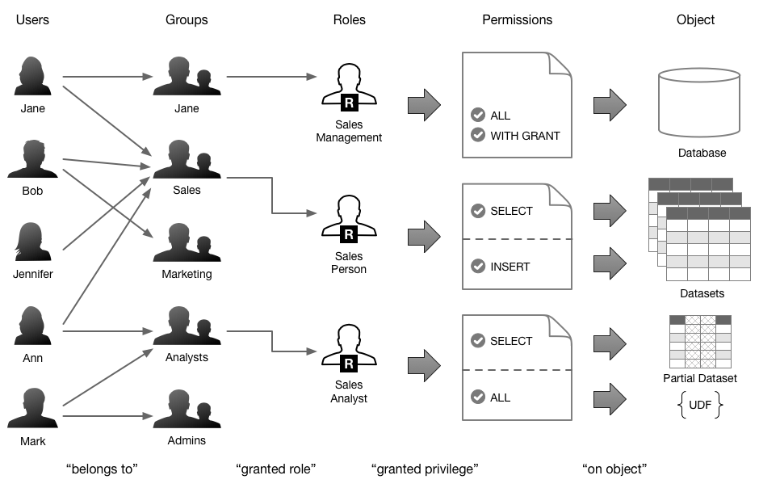
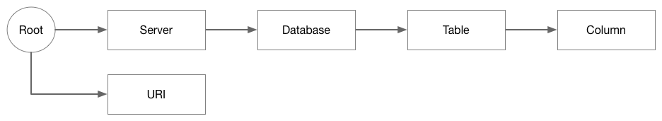

Authorization
Goal and Audience
This document is for DBAs, developers, and data architects, who are looking for information about how authorization works, as related to the Okera Policy Engine.
Introduction
As introduced in the Catalog Overview documentation, the Okera Catalog services include the Okera Policy Engine, which is used throughout the platform to power the self-service authorization process. The Okera Platform is in many ways similar to an RDBMS, as it exposes data primarily through a table structure, no matter what the underlying storage technology provides. Okera also exposes RDBMS-like functionality when it comes to authorizing access to data.
By default, no data is accessible when standing up an Okera Active Data Access Platform and pointing users to it.
Instead, the initial administrators of the platform (which must be configured at the cluster level) can grant access to objects in a variety of ways.
The administrator can also delegate administrative rights of an object and its child objects to regular users or groups of users.
For example, an initial admin could grant full access and administrative rights for the database "sales" to the "salesadmin" user group.
The Policy Engine supports this by providing a very flexible approach, called role-based access control (RBAC).
Roles-Based Access Control
Instead of linking users or groups of users directly to resources, such as database or datasets, the Policy Engine decouples the former from the latter using roles.
These are arbitrarily named collections of permissions that pertained objects in the Schema Registry.
For instance, you could create a role "admins" that has full access to the entire server, which subsumes all objects contained.
Or you could create a role for just a particular purpose inside the sales department, such as being able to read and write all tables necessary for customer relationship management (CRM).
The following diagram shows how users are commonly grouped together and then assigned roles from the Policy Engine.

The advantage of decoupling roles from the user groups is that the roles can be combined to assign all the required permissions to the users of a particular group. You can define a role that can read a subset of a particular table, and another that allows to write into another table subset. Assigning both these roles to a group of users will enable that group to do both operations. Then you assign a user to such a group and give immediate access to the combined functionality.
Note: It is common for Linux/Unix based operating systems (OS) to assign a user a dedicated group that has the same name as the user. You can use that specific group to assign particular roles at a user level. Im practice though it is more common to create broader groups with more than one user to assign permissions in bulk.
Managing Roles
The syntax for creating (or removing) a role is straight forward:
CREATE ROLE <role_name>;
DROP ROLE <role_name>;
Using this command is equally simple:
Example: Creating a role
CREATE ROLE analyst_role;
Note: When you drop a role, all of its assigned permissions are removed as well (as expected).
Privileges
For role-based access control, each role can be assigned a permission, called privileges, to a specific object. The Okera Policy Engine supports the following privileges (which map to specific SQL actions):
| Privilege | Syntax | Actions | Description |
|---|---|---|---|
| All | ALL |
CREATE, ALTER, DROP |
Full and unrestricted access to object |
| Read Access | SELECT |
SELECT |
Read access to object |
| Write Access | INSERT |
INSERT, TRUNCATE |
Write access to object |
The following actions require either ALL, SELECT, or INSERT privileges:
CREATE TABLE LIKEDESCRIBESHOW CREATE FUNCTIONSHOW CREATE TABLESHOW FILESSHOW STATS
Object Types and Scope
All permissions are usually scoped at a specific level. The level is implicitly given by naming the object a permission should apply to.
Objects
Here are the object types supported by Okera:
| Object | Syntax | Description |
|---|---|---|
| Server | SERVER |
Global scope for all objects in the Catalog |
| Database | DATABASE <db_name> |
Scope on a single database and all included objects |
| Table | TABLE <table_name> |
Permissions for a specific table, with all columns |
| Column | (col1, coln) TABLE <table_name> |
As before, but for a subset of columns only |
| URI | URI <uri> |
Specific to a file-based resource. |
You can think of most of these like a hierarchy, with the exception of URIs. The latter is a separate object, while all the others subsume each other from left to right, as shown in the diagram.

Scope
Scope is the selection of an object at some point in the hierarchy, and knowing that all child objects are included. For example, if you allow read access of a specific database for a certain role, all user groups that are associated with that role will be able to read all datasets (that is, all tables and views) inside the database.
Note: You cannot revoke permissions on a scope that were granted on a higher scope. If you grant access for a database to a specific role, you cannot revoke access to some of the datasets included in that database.
Assigning permissions for child objects are commonly issued at the next higher scope. For instance, you need to permit create permissions for a role on the database level, allowing the role owners to create new tables and views inside that database.
Views are handled using the same scope as tables. In other words, when addressing views as part of the authorization commands, refer to the table documentation.
Note: A known issue with views is that column level scope is not enforced.
URI Objects
URIs are a special kind of object, registering paths or specific resource files (such as Java JARs) that are accessible for non-administrative users. There are a handful types of actions that require file system permissions:
- Creating databases
- Creating external tables
- Creating functions
- Altering an external table’s location
- Altering a table’s set of partitions
In general, any action that requires the LOCATION or ROW FORMAT SERDE keywords is checked for file system permissions before it is allowed by the platform.
Some of the above operations are only allowed at the server level scope, implicitly making anyone allowed at that level a global administrator.
And since global administrators are unrestricted, it is assumed they have unrestricted access to the underlying file systems.
Note: The file system checks for global administrators fall back to the Okera Data Access Service (ODAS) having access to the file resources. In practice, every ODAS setup will run with an authenticated technical user account, which needs to have access to all resources that are referenced by any of the location dependent SQL statements.
The following table shows each affected action with the scope and privilege they require, and what that means for the file system checks:
| Action Type | Scope | Privilege | File System Check |
|---|---|---|---|
| Create Database | Server | All | Not needed |
| Create Function | Server | All | Not needed |
| Create External Table | Database | All | Yes1 |
| Alter External Table Location | Database | All | Yes1 |
| Alter Table Partitions | Database | All | Yes1 |
Legend: 1 Applies to non-administrative users only
Note: URIs only are supported in combination with the All privilege, as shown in the table.
For non-specific URIs, that is those which are not referencing a specific resource file (see Extending ODAS for an example), access is checked for the given file system path. Any file or directory inside that location is automatically included. That allows, for example, an administrator to permit access to a specific root path for a given role. Any user that is associated with that role is allowed the same level of access inside that root path.
Finally, any SQL statement that uses one of those resources implicitly, like a SELECT statement using a UDF, does not require a file system permission check again.
This makes sense as first a table or function must be created before it can be used.
In other words, an administrator or elevated user (with “All” privileges on the server or database level respectively) creates the object or function using the explicit location URI.
Any other user with, for example, a read-only role is allowed to access the object or function without requiring explicit access to the underlying resources.
Here are examples showing the difference:
Example: SQL statements that require explicit access to the specified resources
CREATE EXTERNAL TABLE sales.transactions_raw(
txnid BIGINT,
dt_time STRING,
sku STRING,
userid INT,
price FLOAT,
creditcard STRING,
ip STRING)
ROW FORMAT DELIMITED
FIELDS TERMINATED BY ","
LOCATION "s3://acme-sales-data/transactions"';
ALTER TABLE sales.transactions_raw
ADD PARTITION (year=2018, month=05, day=15)
LOCATION "s3://acme-sales-data/transactions/..."';
CREATE FUNCTION sales.mask(STRING) RETURNS STRING
LOCATION 's3://acme-udfs-public/udfs/mask-udf.jar'
SYMBOL='com.acme.hiveudf.MaskUDF';
Example: SQL statements that do not require explicit access to the underlying resources
SELECT count(txnid) FROM sales.transactions_raw;
ALTER TABLE sales.transactions_raw
ADD PARTITION (year=2018, month=05, day=15);
CREATE VIEW sales.transactions AS
SELECT
txnid,
dt_time,
sku,
decode(user(), "admin", userid, tokenize(userid)) as userid,
price,
decode(user(), "admin", creditcard,mask_ccn(creditcard)) as creditcard,
decode (user(), "admin", ip, cast(tokenize(ip) as STRING)) as ip
FROM sales.transactions_raw';
How this is used in practice is explained in Best Practices.
Managing Data Access
The combination of role, privilege, and object is referred to as granting in SQL. Okera supports the following SQL statements to give or remove access to roles:
GRANT
<privilege_level> [(<column_list>)]
ON <object_type_name>
TO [ROLE] <role_name>
[WITH GRANT OPTION]
REVOKE
[GRANT OPTION FOR]
<privilege_level>
ON <obejct_type_name>
FROM [ROLE] <role_name>
<privilege_level>: {
ALL
| SELECT
| INSERT
}
<object_type_name>: {
SERVER
| DATABASE <database_name>
| TABLE <table_name>
| URI <uri>
}
Further, the following commands can be used to add to and remove roles from user groups:
GRANT
ROLE <role_name>
TO GROUP <group_name>
REVOKE
ROLE <role_name>
FROM GROUP <group_name>
The following short examples show how these statements are used:
Example: Granting full read access for a table to a role
GRANT SELECT ON TABLE sales.transactions TO ROLE analyst_role;
Example: Granting read access for specific columns of a table to a role
GRANT SELECT (txnid, sku, price) ON TABLE sales.transactions TO ROLE analyst_role;
Combining a role with a group of users is shown in the next set of examples:
Example: Granting a role to a user group
GRANT ROLE analyst_role TO GROUP test
Example: Granting a role to a specific user
GRANT ROLE admin_role TO GROUP janedoe
Best Practices
Using roles, privileges, and permissions properly takes practice. The following sections discuss the best-practices as recommended by Okera, based on working with enterprise customers.
Role Mapping
Roles can be used complementary, that is, they can be combined to form an effective user access profile. Dependent on the business role a user is assigned to, it makes sense to define specific roles that are then assigned to the appropriate user groups.
Global Administrators
There are two ways of defining global administrators, which are those user that have unrestricted access to the entire ODAS cluster and its associated Catalog.
-
By Configuration
You can define a list of user groups that are given global administrative rights as part of the Deployment Manager configuration:
Example: Defining specific user groups as global catalog administrators
export OKERA_CATALOG_ADMINS="sysadmins,devadmins,dataadmins" -
By Role
The other option is to define a role that grants all permissions to at the server level:
Example: Granting global administrative rights to a role
GRANT ALL ON SERVER TO ROLE global_admin_role; GRANT ROLE global_admin_role TO GROUP admins;
Either way, through configuration or role, any user in such a group is considered a global administrator. The difference is that the latter can be modified without having to restart the ODAS cluster providing the Catalog services.
Data Stewards
With the advent of big data there has been an increase in the number of datasets an organization has to manage. The business role of data steward has been gaining importance in this context, as its tasks include the classification of datasets for use by regular data consumers, such as analysts or data scientists. In a way the data steward is an administrative role that needs to have access to all datasets, and being able to grant access to those datasets with varying levels of permissions.
Since data stewards are not system administrators, their scope can be limited as needed. For example, there could be multiple data steward roles for different parts of the business. The general approach is shown in the following example:
Example: Defining a global data steward role
CREATE ROLE data_stewards;
GRANT SELECT ON SERVER TO ROLE data_stewards WITH GRANT OPTION;
Compartmentalized Data Access
It is common in practice to group databases and datasets together based on a specific business requirement. An example here is to group catalog objects by departments, such as sales, marketing, or administration. Within each group of objects it is recommended to split up responsibilities in group administrators and regular users. This is achieved by defining two roles for each object grouping, while giving each the appropriate privileges:
Example: Defining admin and user roles for an object group
CREATE ROLE sales_admins;
CREATE ROLE sales_analysts;
GRANT ALL ON DATABASE sales TO ROLE sales_admins;
GRANT ALL ON URI 's3://acme-data/department/sales' TO ROLE sales_admins;
GRANT SELECT ON DATABASE sales TO ROLE sales_analysts;
The example creates a role for all admins of the sales department, and another role for all analysts that need to access the data. Note that since the sales administrator role has no global rights, it is necessary to grant it access to the URI pointing to where its data is located.
Public Data
Another use-case for roles is to define a shared role that is opening access to all public datasets.
Example: Defining a global role for access to all public datasets
CREATE ROLE public;
GRANT SELECT ON DATABASE publicdata TO ROLE public;
GRANT SELECT ON TABLE sales.transactions TO ROLE public;
...
The example creates the role and grants access to as many public datasets as required. Granting this role to any user group will immediately open access to all public datasets for reading. And since all public datasets are covered by one role, it is easy to add or remove a dataset and instantly have this reflected for all users.
Developing Functions
As explained in URI Objects, only administrators are allowed to register user-defined functions (UDFs). This is deliberately the case to protect the ODAS services from faulty, erroneous, or even malicious code being executed in the server processes. It is normal in practice for ODAS service to run for many days, weeks, or months before a scheduled maintenance is taking place. How can a developer design, implement, test, and deploy a new function or SerDe (see Extending ODAS) without disruption of production services?
Okera recommends a multi-step process that can solve this problem:
-
Develop UDF using Hive
Using Hive with the
ADD JARstatement allows adding a resource under development in Hive only. The JAR will not be loaded into (or even be made aware to) the ODAS processes, and creating a view making use of it would execute in the context of Hive only. In this case ODAS will provide the lower-level tables only.Note: For users who use Hive provided by EMR that is integrated with ODAS, Okera recommends the use of cluster local databases to circumvent any interference with ODAS. An alternative is the use of external views, which are evaluated only in the context of Hive, which includes the UDF that is in development.
-
Add to ODAS for long-term use
Once the UDF is considered done, it can be moved into ODAS by uploading the resources (that is, the JAR file containing the code) to a release directory that is accessible by the ODAS processes (commonly a shared file system such as S3 in case of AWS setups) and declaring the function as usual.
Local Databases
Extending on the example of UDFs above, Okera recommends the use of cluster local databases for all temporary schema tasks.
Okera recommends to define a proper, company-wide naming scheme for local databases, as they share the same namespace as other databases.
Should a user have a local and managed database with the same name, the local one takes preference.
This is intentionally allowing a developer to experiment with existing databases by temporarily overlaying them with something different.
Otherwise it is advised to use specific names for local database, for example, by prefixing the name with "localdb_".